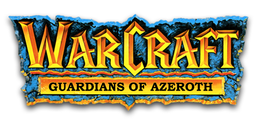

Warcraft: Guardians of Azeroth is a mod for CKII. It is based on the Warcraft universe and specifically the events preceding World of Warcraft Classic that are developed and written by Blizzard Entertainment. This mod is created and supported by an international team from all around the world working to recreate the world of Azeroth and all of its glory within the CKII engine.